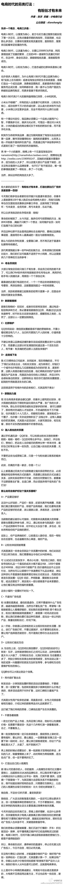

微博刚开始增加分享到微信圈功能，大家赞其开放。前一个升级把这个功能悄悄给取消了。现在又加回来，而且增加了分享到来往的功能。谁知道下一个版本会不会又取消分享到微信圈。- 没逻辑可循。@文科生:微博增加了分享到微信朋友圈的功能，且不用说开放共享的大帽子，这就是一个洞察关系的举措。微博微信代表着不同的使用动机，不是简单的非此即彼的关系，从社会化网络的角度，他们是合作者，他们的共存增加了人们联系的丰富程度。社会化网络的发展是因为他促进了人类的进步，封闭和割裂是逆潮流而动的
帮转@曹胜欢:【每日一推】我参加了CSDN举办的#CSDN2013年度博客之星评选# 欢迎大家为我投上宝贵的一票，转发和投票就有机会获得CSDN精美礼品一份。马上跌出前二十了，求各位朋友发力啊！！@Ada李力 @锣娜儿迪尼奥 @北极光勇 。投票地址：网页链接
帮转@Yorhom:我参加了#CSDN2013年度博客之星评选#活动时间2013年12月06日—2014年1月17日。朋友们赶紧来参与投票吧，参与即有下载积分奖励，更有机会获得精美礼品哦。投票地址网页链接 网页链接
嗯，今天淘宝下了四个单，还有N个在购物车里，强制自己缓缓。@刘松--云时代:北方雾霾天的周末黄昏，总是一个充满抑郁的时刻，欧洲人早就发现了这个，几乎把所有节日都安排在阳光较少的晚秋到早春，让人们在社群的狂欢中赶走抑郁...这种天，海岛度假是奢侈的，不如败东西来得方便
//@水木丁:“女性显然是和男性一样聪明，一样工作努力。没有人能够比嘉莉(Carrie)更加出色地筹办我们的年度股东大会。我认为，一家公司的CEO因性别歧视而放弃任用最有才华的人是多么愚蠢的行为啊。但是，我们正在朝着正确的方向迈进。我们正在朝着我们设定的理念前进。”——美国人前进的很快。@妞博网:《巴菲特：你不会希望女性生活在这样一个世界》这就是我们这个国家，我们仅仅是靠男性这半边天就已取得了如此成就。现在我们正开始释放女性这半边天的潜能。如果我们只让身高超过5英尺10英寸的人担任公司CEO、会计师或律师，而身高不到5英尺10英寸的人必须当护士，这是多么离谱…网页链接
#社区运营#好文。维系好现在的会员关系，在互联网上，以人格魅力吸引粉丝，壮大社区。@电商行业:【电商时代的另类打法：有粉丝才有未来】要以朋友的方式去建立关系，你的任何营销行为，都要基于这群顾客去扩散，维护好这个强关系圈：❶产品要足够好；❷让粉丝体验到被尊重；❸不避讳广告性质；❹让粉丝们彼此互动；❺将内容扩散出去；❻不要急着销售；❼打造出自己的人格属性。。。 
王垠在CSDN上也开了博客：网页链接 //@蒋涛CSDN: //@网路冷眼:王垠在新浪微博的网址是：网页链接，你可以@_王垠_ At他@网路冷眼:Sourcegraph是一个分析和浏览开源源代码及示例的网站，能够精准分析源代码的参数、类型等，目前支持Python，Ruby，Go语言。是清华退学童鞋王垠和另外两人合伙创办。附图为对Github一个项目的分析。@蒋涛CSDN @刘江总编 @CSDN
大量体制人想做事情的人得不到施展的舞台。越来越觉得CSDN是在做很有意义的事情，给大家提供多些施展的平台，而且名气获得靠的是口碑，不是靠政治。贺老师加油！ - 我的2013——一名计算机教师的高开低走 - 迂者-贺利坚的专栏 - 博客频道 - CSDN.NET 网页链接
记得前男友分手前，构想的一个场景是他飞黄腾达，我则是个惨兮兮的loser。我多次回想过这个对话，还是觉得，我希望前男友过得好，他过得不好并不会让我开心。- 有没有过情感联结，就是不一样。@Ada李力:有人问起我对某人还是心怀愤恨吗？我说能理解TA对我做过的事情，嫉恨还谈不上。但如果TA倒霉的话，我会很开心的。